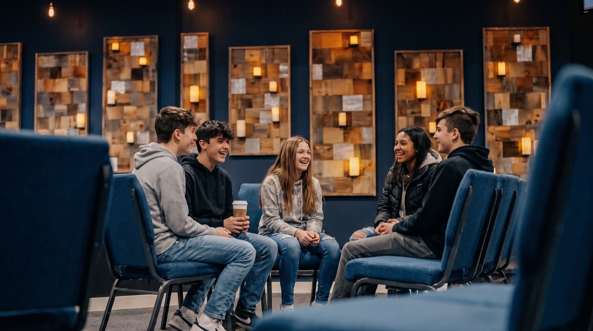

Plan your visit
You’re invited.
Come as you are.
Nobody should have to walk into a church wondering whether they belong. Here is everything you might want to know before Sunday, so the only surprise is how glad we are you came.

Where & when
Sundays at 10,
on Kibbe Road
Whether this is your first time in a church, your first time back in a long while, or you are simply curious, there is a seat here for you. No one will single you out, and nobody expects you to have anything figured out.
We are a few minutes from the East Longmeadow rotary. Free parking is on site, and the front doors are hard to miss.
Get directions-
Sundays at 10:00am
One service, about 90 minutes, in person and online. Doors open early for coffee.
-
15 Kibbe Rd, East Longmeadow
Look for the Cornerstone sign at the road. Our building sits back from the street with the lot out front.
-
Parking and arrival
Park anywhere. Guest spaces are closest to the door. Aim to arrive 10 to 15 minutes early, especially if you are bringing kids.
-
Coffee is on
Grab a cup in the lobby before the service, and bring it in with you.
Step by step
What a Sunday feels like
From the parking lot to the last cup of coffee, here is how the morning usually goes.
-
Pulling in
A greeter at the door will say hello, hand you anything you need, and point you toward coffee or kids check-in. If you would rather slip in quietly, that works too.
-
Coffee and hellos
The lobby is where people catch up before the service. Linger if you like, or head straight for a seat. Both are completely normal.
-
Kids check-in
Kingdom Kids uses a secure check-in near the entrance. The first time, a volunteer walks you and your kids to their room so nobody has to guess.
-
Worship
About 25 minutes of live music. It is expressive here. People sing out, raise their hands, and some dance. Join in however feels natural, or simply take it in.
-
The message
Pastor Josh or Pastor Christine teaches from the Bible for 35 to 40 minutes. Honest, practical, and centered on Jesus. Bring a Bible or follow along on your phone.
-
Prayer and next steps
We close with an invitation to receive prayer from the team up front. It is always optional. After that it is coffee, conversation, and you are on your way.
What you can expect
- Casual clothes. Jeans and a hoodie are the norm, and nobody is checking.
- Friendly people who will say hi, then give you space.
- Live, heartfelt worship. People sing out, raise their hands, sometimes dance.
- Teaching from the Bible you can actually use on Monday.
- Clear signs, and a greeter to ask if the signs are not enough.
- Prayer offered at the end, for anyone who wants it.
What you won’t find
- Judgment about where you have been or what you doubt.
- A moment where visitors stand up or introduce themselves.
- Pressure to give. The offering is for people who call this home.
- Church words nobody explains.
- A polished performance. We would rather be real.
- Anyone who has it all figured out. That includes the pastors.
Bringing kids?
They’ll have a
better morning than you
Every volunteer who serves with our kids is trained and background-checked, and every room uses a secure check-in with matching tags. You will have your kids back in a few minutes after the service, and the only complaint is usually that they wanted to stay.
-
Nursery
Birth to 3 years
A calm, cozy room with caregivers who love babies. Drop in for part of the service or all of it.
-
Kingdom Kids
Preschool to 5th grade
Kids worship with everyone first, then head out for Bible stories, worship, and games built for their age.
-
Youth and teens
Middle and high school
Teens sit in the service on Sunday, then have their own night during the week. See youth group
Common questions
Things people ask before they come
How long is the service?
Plan on about 90 minutes. We start at 10:00am sharp, and most families are back in the car by 11:45. Arriving 10 to 15 minutes early gives you time to park, get coffee, and check kids in without rushing.
What should I wear?
Whatever you are comfortable in. Most people are in jeans. You will see a few dresses and a few shorts, and nobody will notice either way.
Do I have to believe anything to come?
No. Skeptics, seekers, the curious, and the burned-out are all welcome. You can sit in the back, listen, and leave with no strings attached. If you have questions, we love questions.
Will I be singled out as a visitor?
No. There are no name tags, no stand-and-wave moment, and nobody is going to pull you up front. If you want to meet someone, the greeters and pastors are easy to find. If you do not, that is fine too.
Will you ask me for money?
There is a moment in the service where people who call Cornerstone home give. As a guest, please do not feel any pressure to take part. Your presence is the gift.
What kind of church is Cornerstone?
Cornerstone is part of The Foursquare Church, a global family of churches that started in 1923. We believe in Jesus as Savior, Healer, Baptizer in the Holy Spirit, and Soon-Coming King. In practice that means worship is expressive, prayer is expected, and the Bible is taken seriously.
Is the building accessible?
Yes. The entrance is step-free, there is accessible parking by the door, and restrooms are accessible. If you need anything else to be comfortable, a greeter can help, or .
What happens after I visit?
Nothing you did not ask for. If you fill out a connect card, you will get one short thank-you from a pastor, and an invitation to coffee if you want it. You will not be added to a list or chased down.
Not sure where to start?
Start with whatever you need most
Watch first
Hear a message from home
Not ready to walk in? Listen to a recent sermon and get a feel for how we talk about faith before you come.
Browse sermons →Find your people
Looking for community
Sunday is the front door. Groups are where friendships happen, from young adults to men’s and women’s gatherings.
See groups →Ready to visit?
We’ll save you a seat
Let us know you are coming and we will meet you at the door, show you around, and get your kids settled. Or just show up Sunday at 10. Either way, we would love to meet you.
15 Kibbe Rd, East Longmeadow, MA 01028 · 413-525-8802